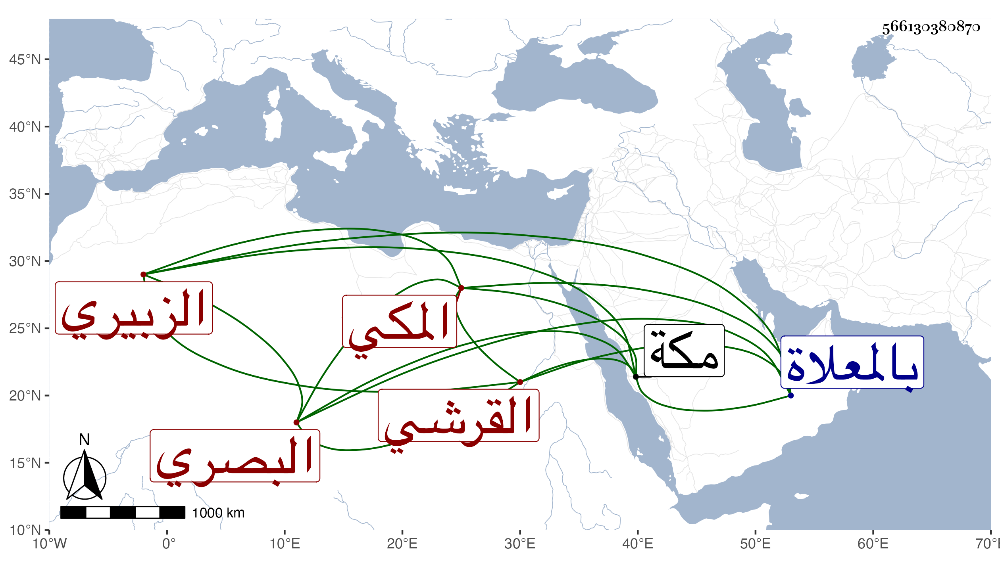

0902Sakhawi.DawLamic.ITO20230111-ara1.EIS1600.566130380870
Biography ID: 566130380870
أحمد بن أحمد بن محمد بن محمد بن علي بن عبد الكريم بن يوسف بن سالم ابن دليم القرشي الزبيري البصري المكي الآتي ابن أخيه أحمد بن يوسف ويعرف بالشهاب دليم بضم الدال المهملة ثم لام وآخره ميم صغر أكثر من النظم ومدح النبي صلى الله عليه وسلم بقصائد وكتب عنه صاحبنا ابن فهد قوله :
| ألا ليت شعري هل أرى لي عودة | إلى المصطفى فهو البشير محمد |
| أقبل مثواه وألثم تربه | وأشكر ربي عند ذاك وأحمد |
وقد لقيته وسمعت بعض نظمه . ومات وأنا بمكة في ليلة الثلاثاء خامس عشر ذي القعدة سنة ست وخمسين وصلى عليه بعد الصبح ودفن بالمعلاة .
